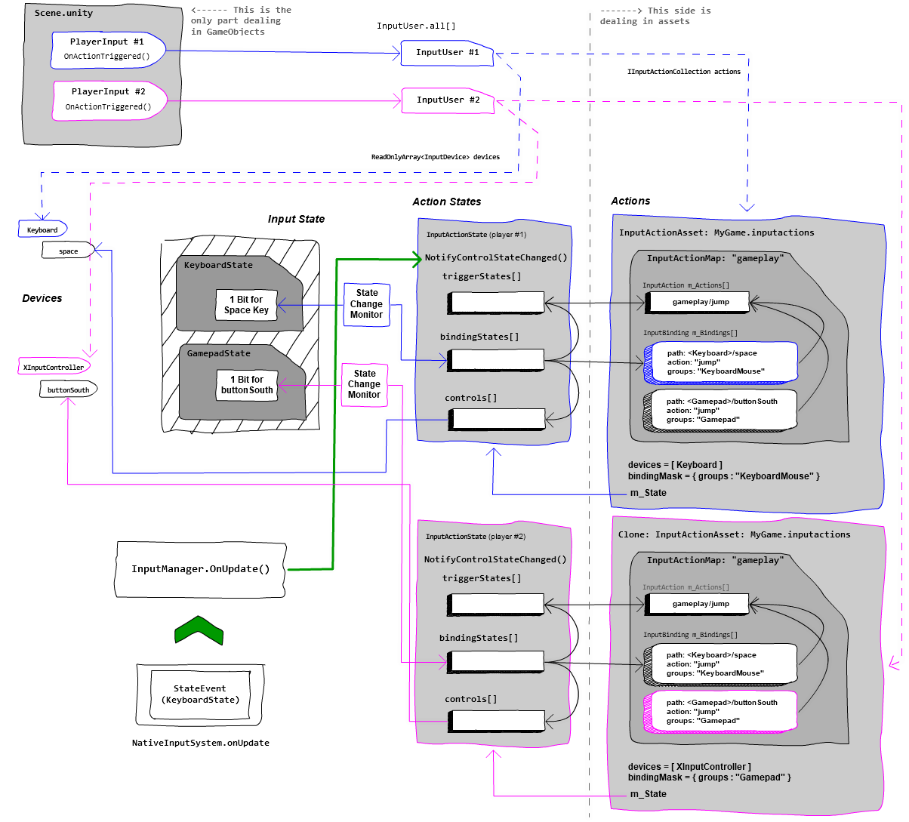
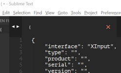
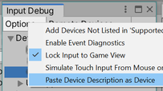
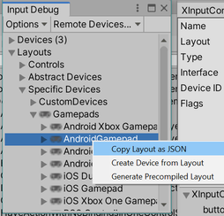
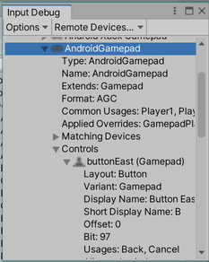
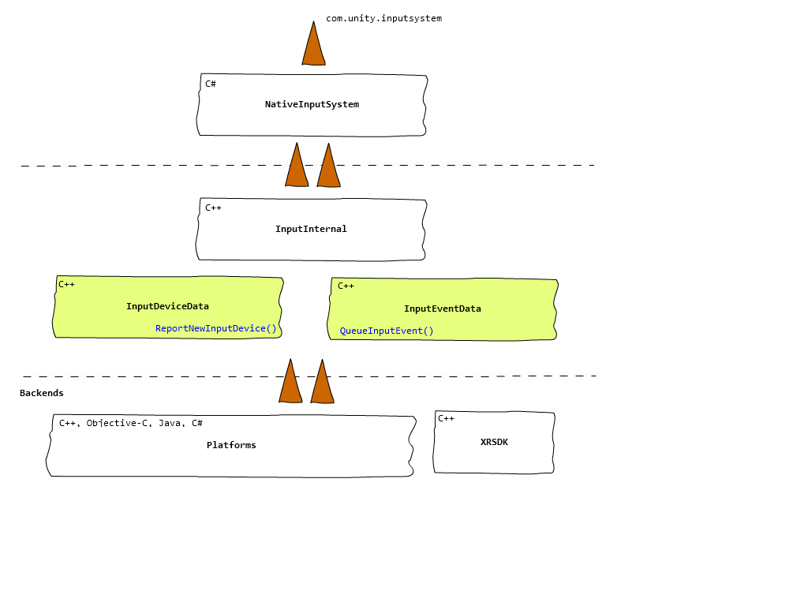
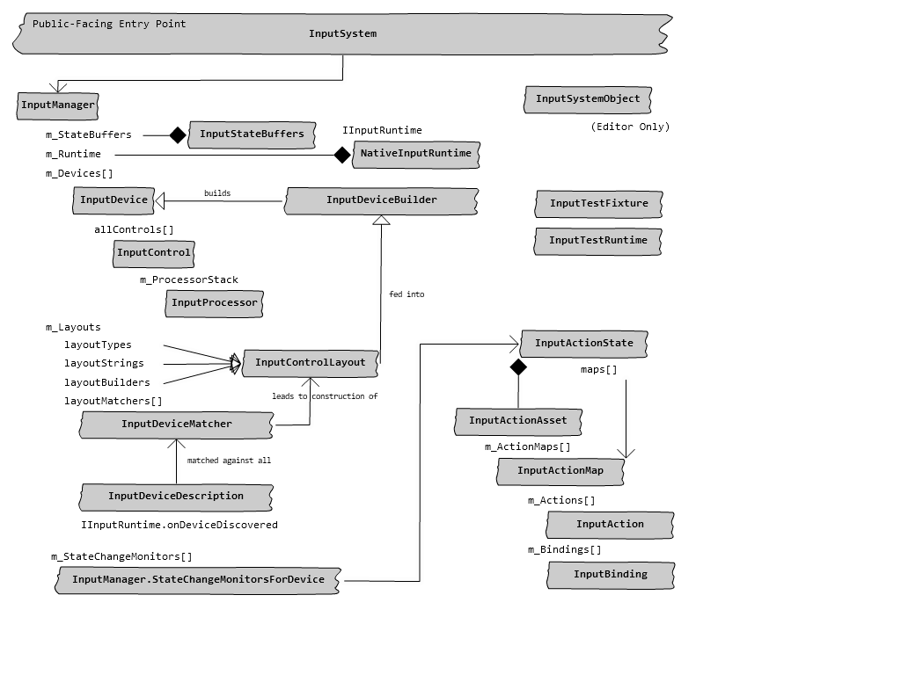
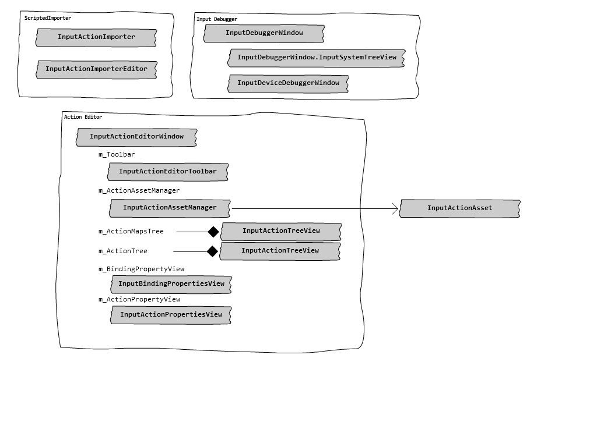

class: center, middle # Input System ## The Grand Tour <br><br><br> https://github.com/Unity-Technologies/InputSystem/Docs/Presentation/InputSystem-TheGrandTour.html<br><br> https://www.youtube.com/playlist?list=PLXbAKDQVwzta4J2Sbmjio2rTD6uO-phbR --- # Overview .center[] ??? 1. Mission 2. Background 3. The Buzzwords 4. The Concepts 5. The Architecture 6. The Debugger 7. The Code 8. The Problems --- # 1. The Mission <br><br> .center[Transmit, with *low overhead*,<br>input device activity from *all platforms*<br>through a *single API* catering to<br>both *low-level and high-level usage*.] --- # 2. Background * `InputManager` * 99% platform-dependent code * Diverging APIs: touch, XR, consoles * Non-extensible and largely inaccessible * Push to user-land * Package --- # 3: The Buzzwords * *Game-oriented* * Frame-to-frame * *Event-driven* * All input delivered in timestamped packets * *Device-agnostic* * All devices represented the same way * *Platform-agnostic* * All platforms go through the same API * *Automation-ready* * Input can be fully driven from code * *Cross-platform-consistent* * Same device, same input * *User-extensible* * New devices and customizations --- # 4: The Concepts .center[] --- # 4.1: Concept - Devices .left-column[ ### A. Devices ] .right-column[ * Receive input * Expose controls * Execute commands ("IOCTL") * Built from layouts * Numeric ID * Unique for application run * Can be assigned "usages" * `LeftHand`, `Player1`, `Horizontal` * Can be added and removed by anyone * Can be polled by anyone at any time ] .footnote[https://docs.unity3d.com/Packages/com.unity.inputsystem@1.1/manual/Devices.html] --- # 4.2: Concept - Controls .left-column[ ### A. Devices ### B. Controls ] .right-column[ * Provide values * Form hierarchies * `Gamepad1/leftStick/x` * Built from layouts * Immutable internal name (`"buttonSouth"`) * Mutable external name (`"é"`) * Can have "usages" (`"Submit"`) * Can be monitored for changes * Think "data breakpoint" ] .footnote[https://docs.unity3d.com/Packages/com.unity.inputsystem@1.1/manual/Controls.html] --- # 4.3: Concept - Layouts .left-column[ ### A. Devices ### B. Controls ### C. Layouts ] .right-column[ * Data that describes the setup of controls/devices * Collection of control items that in turn may reference other layouts * Three ways to build 1. Reflection 2. JSON 3. `InputControlLayout.Builder` * Can be "precompiled" * Can be added and modified on the fly * Can be overridden in full or in part * Are matched to devices by pattern matching on the device description ] .footnote[https://docs.unity3d.com/Packages/com.unity.inputsystem@1.1/manual/Layouts.html] --- # 4.4: Concept - State .left-column[ ### A. Devices ### B. Controls ### C. Layouts ### D. State ] .right-column[ * Raw blob of unmanaged memory holding input state * Memcpy'able, no heap references * Multiple copies * old&new, player&editor * All devices share one big block of memory * Each device and each control corresponds to a slice of memory * State is updated by copying contents of events on top of it * May be intercepted by device to deal with complications such as `Pointer.delta` and touchscreens * Turned into processed values by `InputControl.ReadValue()` ] --- # 4.5: Concept - Events .left-column[ ### A. Devices ### B. Controls ### C. Layouts ### D. State ### E. Events ] .right-column[ * Anyone can feed `InputEvent`s * ATM every event is associated with a device * All events are raw blittable memory chunks * Central buffer in native * One main-thread-only buffer * One threaded buffer for background threads (blocks when full) * Buffer flushed on each input update * In full except for `FixedUpdate`s for which we do timeslicing * Various types * State events (`StateEvent`, `DeltaStateEvent`) * Disconnect event (`DeviceRemoveEvent`) * Configuration change event (`DeviceConfigurationEvent`) * Text input (`TextEvent`) ] .footnote[https://docs.unity3d.com/Packages/com.unity.inputsystem@1.1/manual/Events.html] --- # 4.6: Concept - Bindings .left-column[ ### A. Devices ### B. Controls ### C. Layouts ### D. State ### E. Events ### F. Bindings ] .right-column[ * Establish __input__ channel from 1+ controls to an action * Can be grouped into control schemes * Controls are addressed using a "path language": ``` <XRController>{LeftHand}/trigger ``` * Can apply processor stack to incoming values ``` "invert,scale(factor=2)" ``` * Can apply "interactions" ``` "multitap(tapCount=3)" ``` * Can use "composites" to source several bindings into one .center[] ] .footnote[https://docs.unity3d.com/Packages/com.unity.inputsystem@1.1/manual/ActionBindings.html] --- # 4.7: Concept - Actions .left-column[ ### A. Devices ### B. Controls ### C. Layouts ### D. State ### E. Events ### F. Bindings ### G. Actions ] .right-column[ * Logical input: "jump", "move", "look" * Can be on their own or grouped into maps * The latter can further be grouped into assets * "Phased" interaction model * `Started` * `Performed` * `Canceled` * Three types * Value * Button (press/release) * Pass-Through (input sink) * Callback and polling APIs ] .footnote[https://docs.unity3d.com/Packages/com.unity.inputsystem@1.1/manual/Actions.html] --- # 4.8: Concept - Players .left-column[ ### A. Devices ### B. Controls ### C. Layouts ### D. State ### E. Events ### F. Bindings ### G. Actions ### H. Players ] .right-column[ * Each player... * ... is associated with 1+ devices * ... may have an associated set of actions * ... may have a current control scheme * ... may be associated with a platform user account (consoles) * Single-player: One player that can freely switch control schemes and devices * Multiplayer: Multiple players each associated with a fixed set of devices ] .footnote[https://docs.unity3d.com/Packages/com.unity.inputsystem@1.1/manual/UserManagement.html] --- # 5: The Architecture * Low-level: Events and devices * High-level: Actions and players .footnote[https://docs.unity3d.com/Packages/com.unity.inputsystem@1.1/manual/Architecture.html] --- # 5.1: The Architecture - Low-Level .center[<img src="InputArchitectureLowLevel.png" style="max-width: 640px; max-height: 480px;"/>] --- # 5.2: The Architecture - High-Level .center[] --- # 6: The Debugger .footnote[https://docs.unity3d.com/Packages/com.unity.inputsystem@1.1/manual/Debugging.html] .center[] --- # 6.1: The Debugger - Device Descriptions <img src="CopyDeviceDescription.png" style="max-width: 160; max-height: 120;"/>   --- # 6.2: The Debugger - Layouts   --- # 7: The Code .center[] --- # 7.1: The Code - Native .left-column[ ### A. Modules/Input ] .right-column[ .center[] ] --- # 7.2: The Code - Native .left-column[ ### A. Modules/Input ### B. PlatformDependent ] .right-column[ * One backend for each platform we support * Win32, Mac, Linux, UWP, Android, iOS, WebGL, etc. * XR is orthogonal to this and feeds data in parallel from XRSDK subsystem * Future: Unity/XR Remote * Some platforms run UI on thread separate from app/Unity thread * `QueueInputEvent()` may block and thus deadlock UI thread * Use of separate, platform-specific input buffer ] --- # 7.3: The Code - Managed .left-column[ ### A. Core ] .right-column[ .center[] ] --- # 7.4: The Code - Managed .left-column[ ### A. Core ### B. Editor ] .right-column[ .center[] ] --- # 7.5: The Code - Managed .left-column[ ### A. Core ### B. Editor ### C. "Plugins" ] .right-column[ * Integrations * uGUI (`Plugins/UI`) * Additions * `MonoBehaviour` wrapper: `Plugins/PlayerInput` * Touch polling: `Plugins/EnhancedTouch` (... wtf) * On-screen controls: `Plugins/OnScreen` * HID layout builder: `Plugins/HID` * Platform/hardware-specific ] --- # 8: The Problems * Susceptible to event load * System-wide buffer instead of per-device buffer * Expensive `ReadValue()` * Expensive layout system --- # 9: Resources * [Introducing the new Input System - Unite Copenhagen 2019](https://www.youtube.com/watch?v=hw3Gk5PoZ6A) * [Custom Devices with Unity's Input System](https://www.youtube.com/watch?v=YNNVGGulscc) * [DOTS Input Prototype](https://forum.unity.com/threads/dots-input-prototype-hackweek-2020.926939/)